40 hình độc lập cho Data representation. Mỗi hình có PNG nền trong suốt và SVG chỉnh sửa được. Tiêu đề, mô tả và nút tải trên trang này nằm ngoài file ảnh. Nhấp vào hình để xem bản đầy đủ.
U13-V01 · Tổng quanBản đồ toàn bộ Chapter 13
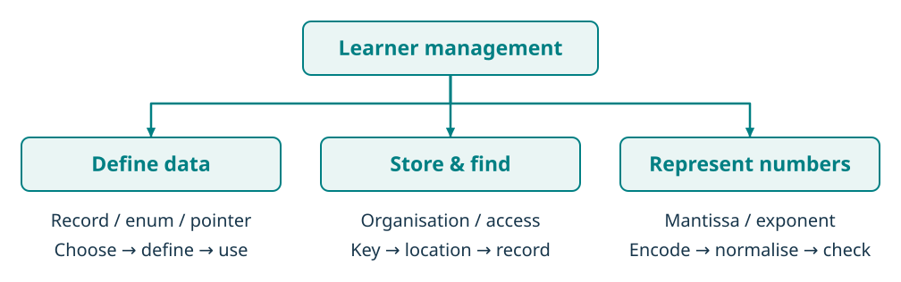
Ba nhánh: thiết kế dữ liệu → tổ chức/lấy dữ liệu → biểu diễn số; mỗi nhánh có tên kỹ năng đầu ra, nối về bài toán quản lý học viên.
Tham khảo: tr.304, mục tiêu chương; bố cục mới · Câu luyện: 1-28
U13-V02 · Tổng quanCầu nối kiến thức AS → A Level
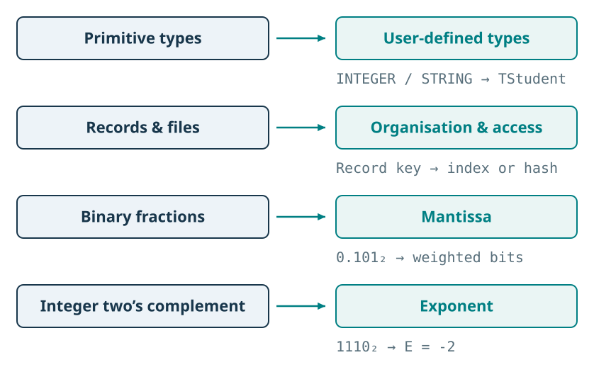
Bốn cặp: primitive types → user-defined types; record/file → organisation/access; binary fraction → mantissa; integer two’s complement → exponent. Mỗi cặp một ví dụ ngắn.
Tham khảo: tr.304, 308, 312, What you should already know; bố cục mới · Câu luyện: Chẩn đoán đầu vào
U13-V03 · 13.1Vì sao cần user-defined type?
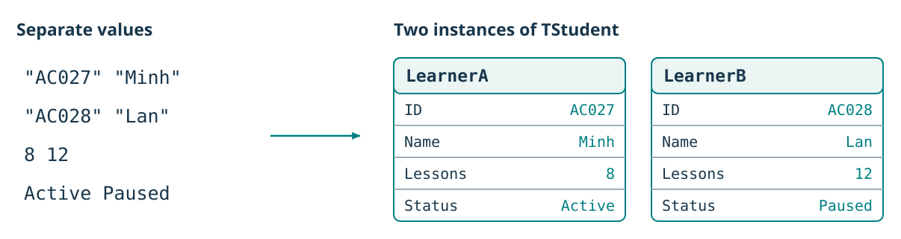
Bên trái là dữ liệu rời của hai học viên dễ trộn; bên phải là hai record cùng khuôn TStudent. Làm nổi bật việc gom đúng dữ liệu của từng người.
Tham khảo: tr.305, phần giải thích; bổ sung sơ đồ · Câu luyện: 1, 3
U13-V04 · 13.1Cây phân loại kiểu dữ liệu
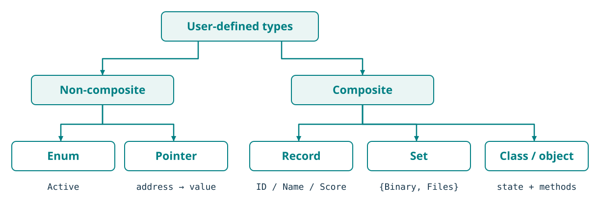
Nhánh non-composite gồm enum, pointer; nhánh composite gồm record, set, class/object. Mỗi lá có một biểu tượng và một ví dụ dữ liệu.
Tham khảo: tr.305-307; vẽ mới, dùng phân loại đã đối chiếu syllabus · Câu luyện: 7
U13-V05 · 13.1Enum: kiểu, biến và giá trị
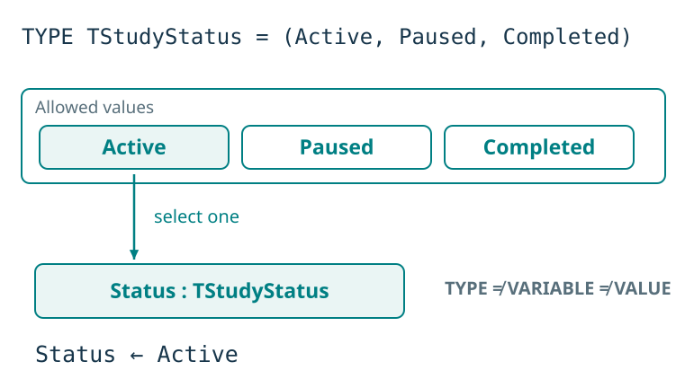
TYPE TStudyStatus với Active/Paused/Completed; biến Status chọn một giá trị. Tách rõ ba nhãn Type / Variable / Value; enum Active không có dấu ngoặc kép.
Tham khảo: tr.305, ví dụ Tmonth; thay bằng ví dụ lớp học · Câu luyện: 2
U13-V06 · 13.1Record: từ định nghĩa đến một học viên
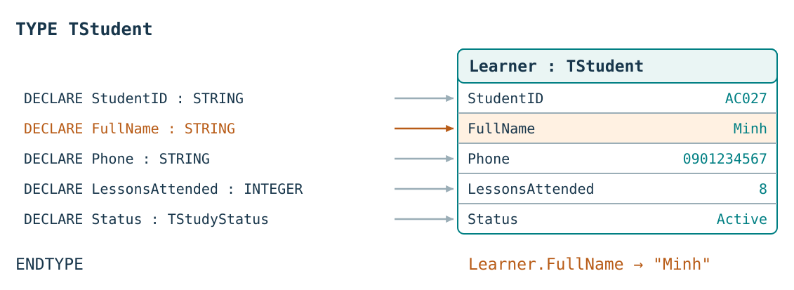
Nối từng dòng TYPE TStudent tới field tương ứng trong record Learner; StudentID/FullName/Phone là STRING, LessonsAttended INTEGER, Status enum. Tô nổi đường Learner.FullName.
Tham khảo: tr.307, record example; sửa lựa chọn kiểu theo ý nghĩa · Câu luyện: 3-4
U13-V07 · 13.1Một record và array of records
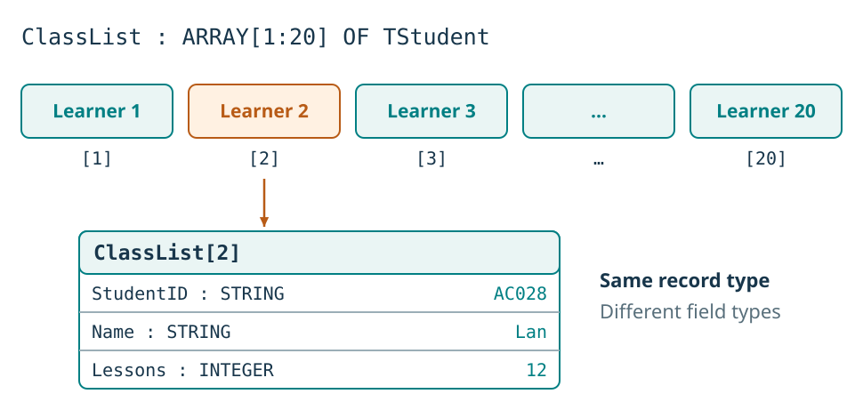
Một thẻ record bên cạnh 3 ô của ARRAY[1:20] OF TStudent; phóng to phần tử thứ 2 để chỉ ra các field khác kiểu bên trong mỗi record.
Tham khảo: Bổ sung từ Guide 1.3; nối kiến thức Ch.10 với Ch.13 · Câu luyện: 3, 28
U13-V08 · 13.1Pointer: địa chỉ và giá trị
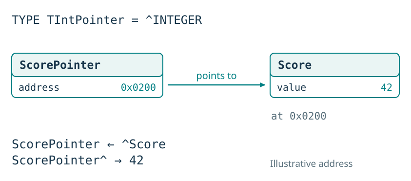
Hai ô bộ nhớ: ScorePointer chứa địa chỉ minh họa; Score chứa 42. Mũi tên phân biệt ^Score lấy địa chỉ và ScorePointer^ đọc giá trị. Ghi rõ địa chỉ là giả lập.
Tham khảo: tr.306, pointer/dereferencing; mở rộng chú thích thành sơ đồ · Câu luyện: 5
U13-V09 · 13.1Pointer thay đổi gì khi dữ liệu đổi?
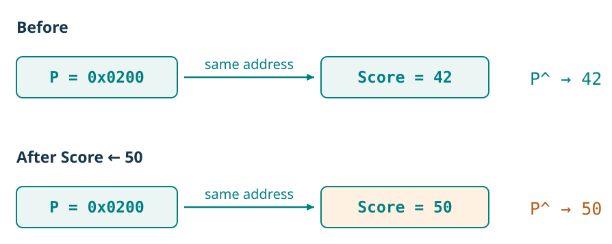
Hai trạng thái Score=42 và Score=50; pointer vẫn giữ cùng địa chỉ. Đầu ra khi dereference đổi từ 42 sang 50.
Tham khảo: tr.306 + ví dụ Guide 1.4; bổ sung trạng thái · Câu luyện: 5
U13-V10 · 13.1Set: phần tử, hợp và giao
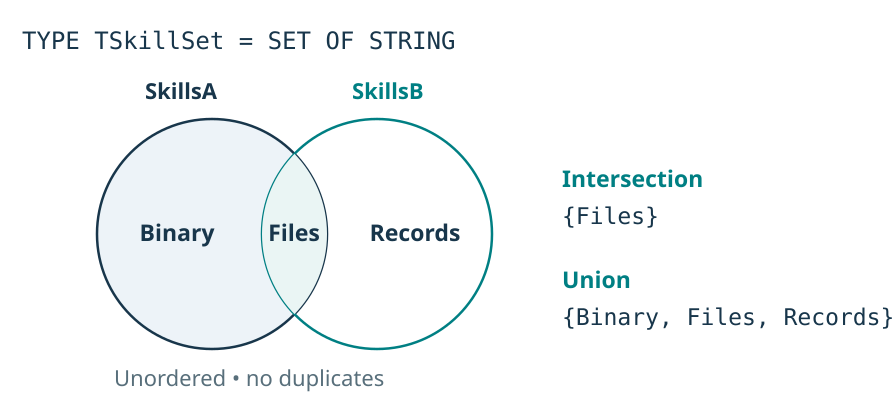
Hai tập SkillsA={Binary,Files}, SkillsB={Files,Records}; tô miền giao Files, một khung riêng cho hợp; không lặp phần tử. Có dòng SET OF STRING liên kết với hình.
Tham khảo: tr.305, 307, set và union/intersection; hình bổ sung · Câu luyện: 6
U13-V11 · 13.1Enum và set: một lựa chọn hay nhiều phần tử?
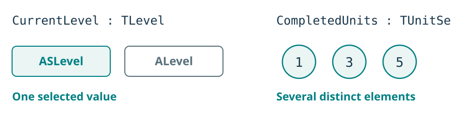
Hai cột: CurrentLevel chọn ASLevel hoặc ALevel; CompletedUnits chứa nhiều unit. Minh họa một giá trị enum và một tập hiện có, tránh hiểu enum là danh sách nhiều lựa chọn đồng thời.
Tham khảo: tr.305, 307; tổng hợp mới · Câu luyện: 7
U13-V12 · 13.1Class → hai object có trạng thái riêng
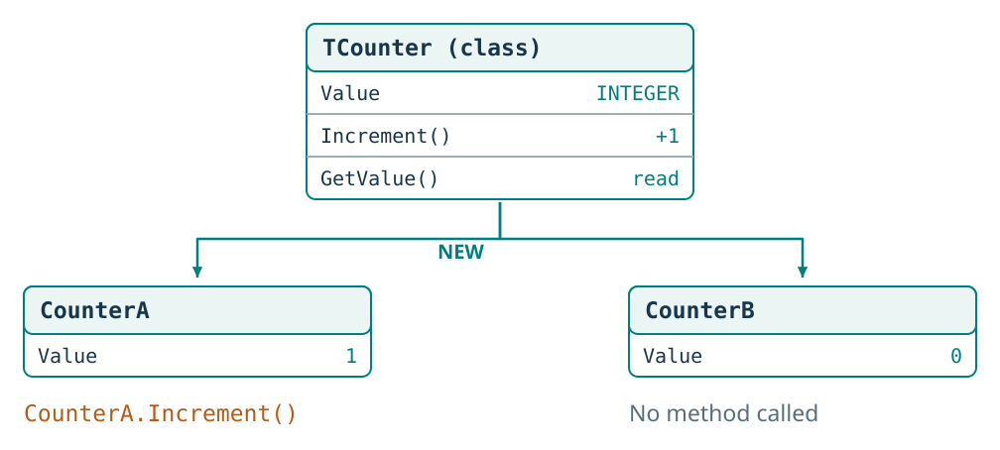
Một khuôn TCounter có Value và Increment()/GetValue(); tạo CounterA, CounterB. Gọi Increment trên A, chỉ A đổi 0→1, B vẫn 0.
Tham khảo: tr.307, Classes; ví dụ mới từ Guide · Câu luyện: 8
U13-V13 · 13.2Organisation và access là hai lớp khác nhau
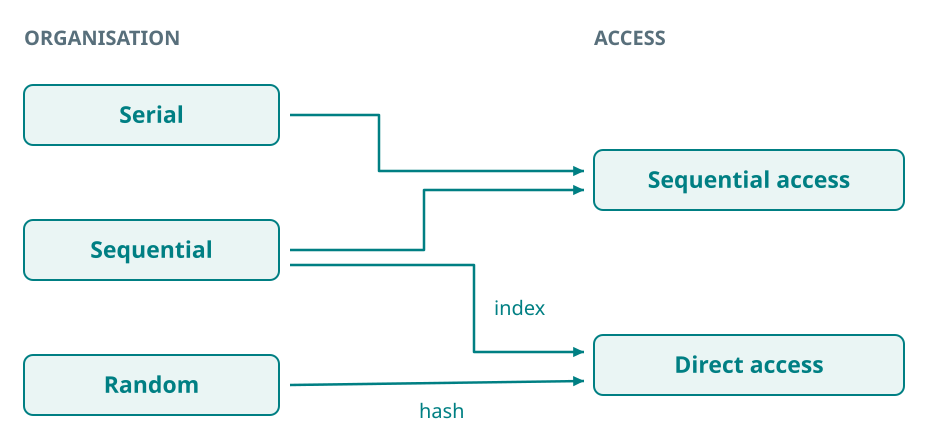
Lớp trên: quy tắc lưu serial/sequential/random. Lớp dưới: sequential/direct access. Nối serial→sequential; sequential→sequential và direct qua index; random→direct qua hash.
Tham khảo: tr.308-310 và bài ghép ở tr.327; tổng hợp mới · Câu luyện: 9-11
U13-V14 · 13.2Serial, sequential và random trên cùng bộ record
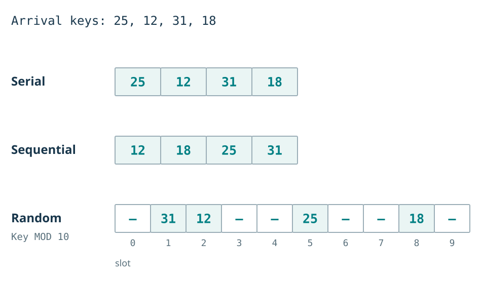
Dùng cùng khóa đến theo thứ tự 25,12,31,18. Serial giữ thứ tự đến; sequential là 12,18,25,31; random dùng Key MOD 10 cho slot 5,2,1,8. Ghi cả key lẫn slot, không chỉ xáo vị trí tùy ý.
Tham khảo: Fig.13.1 tr.308; Fig.13.2 và 13.4 tr.309 · Câu luyện: 9-10
U13-V15 · 13.2Serial append: thêm vào cuối tệp
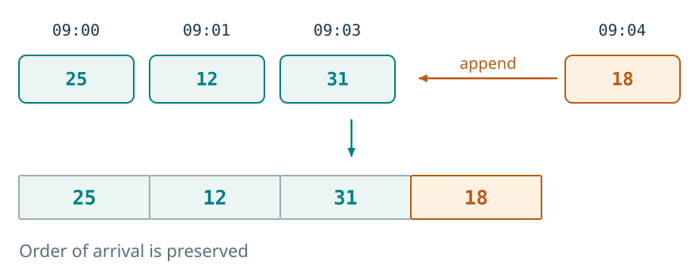
Chuỗi sự kiện có thời điểm và record key; record mới đi vào ô cuối. Giữ trật tự theo lúc thêm, không tự sắp lại theo key.
Tham khảo: Fig.13.1 tr.308 · Câu luyện: 9-10
U13-V16 · 13.2Sequential insertion: chèn đúng thứ tự key
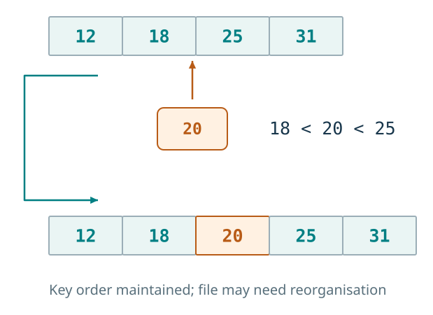
Từ 12,18,25,31 thêm 20 thành 12,18,20,25,31. Đánh dấu vị trí logic cần chèn; chú thích có thể cần tổ chức lại tệp, không hàm ý mọi hệ thống ghi đè tại chỗ.
Tham khảo: Fig.13.2-13.3 tr.309 · Câu luyện: 9
U13-V17 · 13.2Sequential search: tìm và dừng sớm
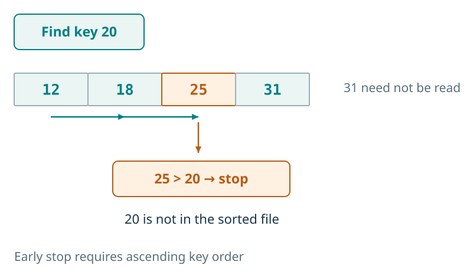
Tìm 20 trong 12,18,25,31; con trỏ đọc lần lượt 12→18→25 rồi dừng vì 25>20. Nhánh phụ: serial chưa sắp không dùng được điều kiện dừng này.
Tham khảo: Fig.13.5 tr.310; ví dụ mới từ Guide · Câu luyện: 11
U13-V18 · 13.2Direct access bằng index
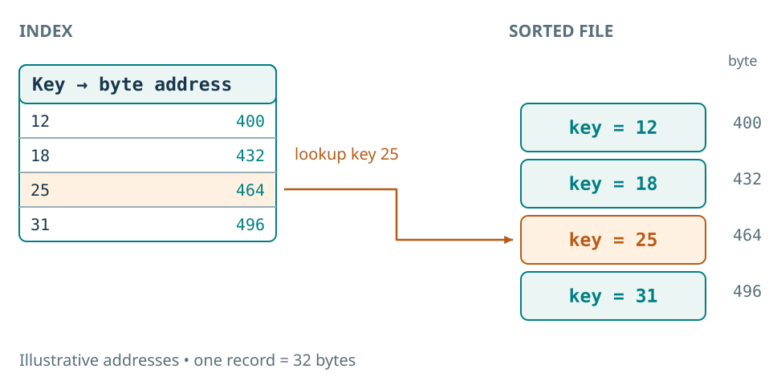
Bảng index key→địa chỉ ở bên trái; tệp đã sắp key ở bên phải; một lần chọn key dẫn tới đúng record. Địa chỉ giả lập nhất quán.
Tham khảo: tr.310, Direct access; hình bổ sung · Câu luyện: 11
U13-V19 · 13.2Hashing: key → slot → địa chỉ byte
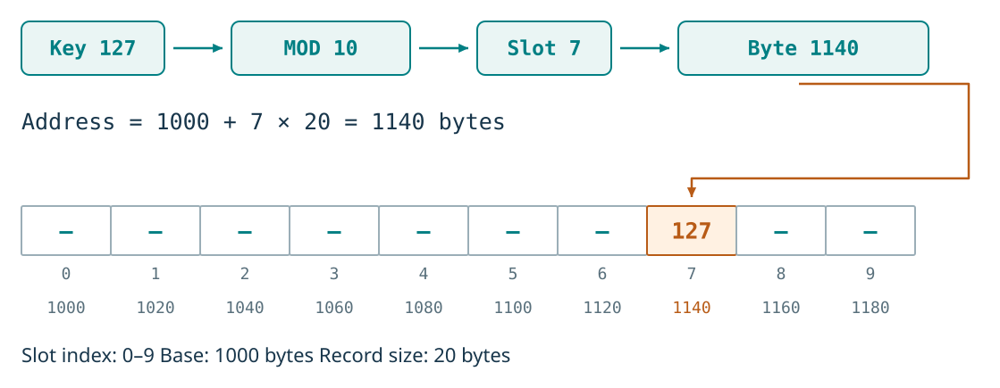
N=10, Base=1000 byte, RecordSize=20 byte: key127→MOD10=7→1000+7×20=1140. Vẽ dải slot 0-9 kèm địa chỉ bắt đầu từng record.
Tham khảo: Table13.1 tr.310, Activity13D tr.311; dữ liệu mới · Câu luyện: 12
U13-V20 · 13.2Hash khóa chuỗi bằng tổng mã ký tự
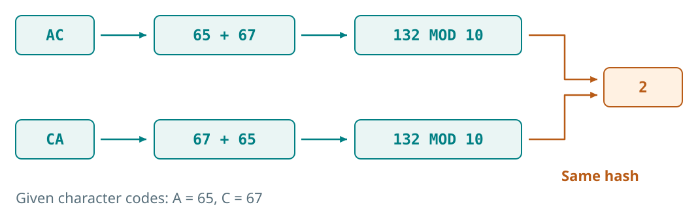
AC và CA tách thành mã65/67; cùng tổng132, MOD10=2. Cho thấy đổi thứ tự ký tự vẫn có thể cùng hash ở phương pháp đơn giản này.
Tham khảo: Extension Activity13B tr.311; ví dụ mới · Câu luyện: 15b
U13-V21 · 13.2Collision: nhiều key cùng một slot
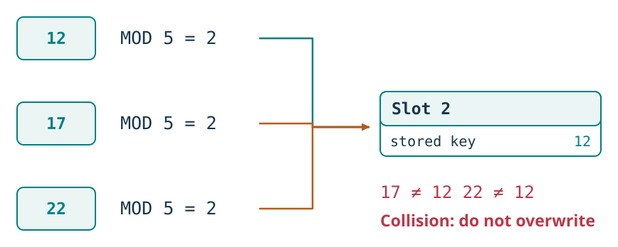
12,17,22 qua MOD5 cùng tới slot2; slot2 đã chứa12. Nhãn khác key / cùng hash; không cho hình diễn tả ghi đè record cũ.
Tham khảo: Table13.2 tr.311; dữ liệu mới · Câu luyện: 13-15
U13-V22 · 13.2Dò tuyến tính: chèn, tìm, quay vòng và không tìm thấy
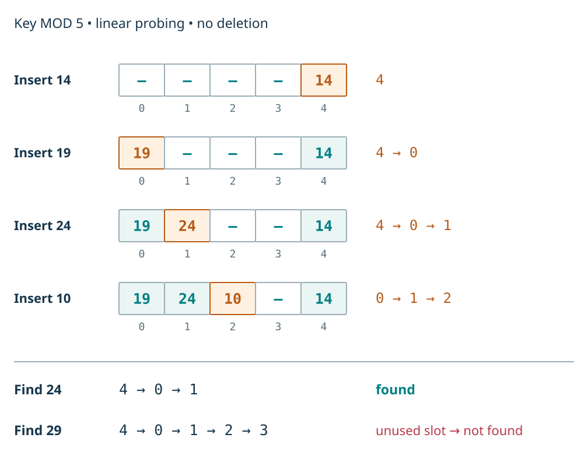
Bảng5 slot; chèn14,19,24,10 thành [19,24,10,trống,14]. Các khung riêng: chèn24 đi4→0→1; tìm24 cùng đường; tìm29 đi4→0→1→2→3 rồi dừng. Giả thiết chỉ chèn, chưa xóa.
Tham khảo: tr.311, cơ chế tìm vị trí trống kế tiếp; ví dụ Practice13-14 · Câu luyện: 13-14
U13-V23 · 13.2Collision với overflow area
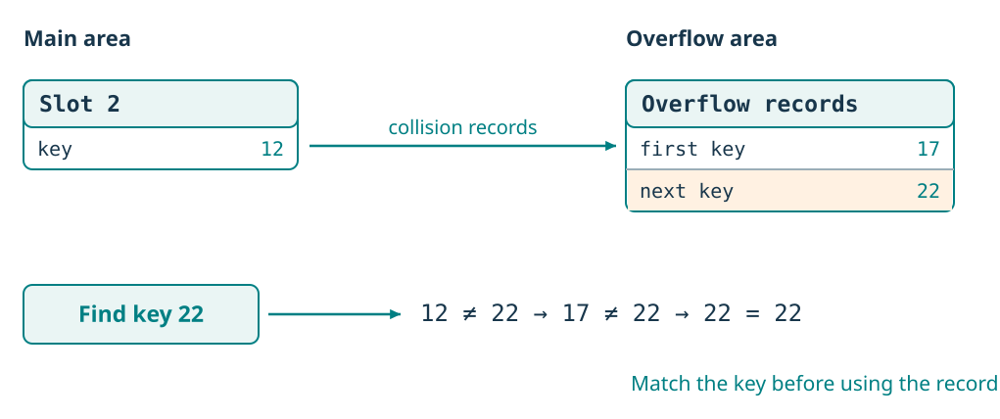
Slot chính2 chứa12; 17 và22 ở vùng tràn. Tìm22 kiểm tra key12 rồi lần lượt vùng tràn. Tách bố cục vùng chính/vùng tràn và thể hiện đường truy hồi.
Tham khảo: tr.311, overflow area; hình bổ sung · Câu luyện: 15a
U13-V24 · 13.3Từ dạng khoa học đến M × 2^E
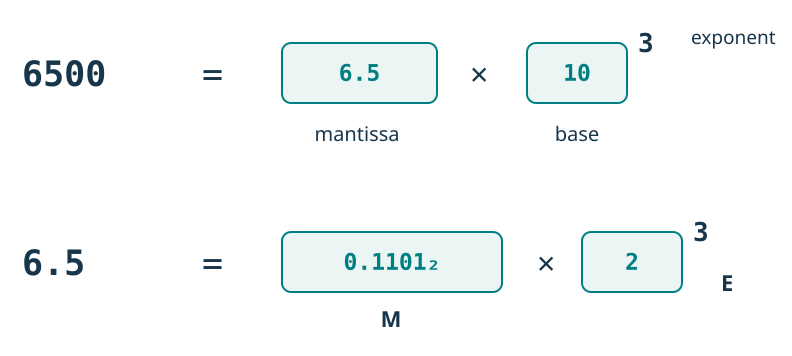
Hai dòng: 6500=6.5×10^3 và 6.5=0.1101₂×2^3. Chỉ rõ cơ số, mantissa và exponent; không đồng nhất số mũ với giá trị 2^E.
Tham khảo: Fig.13.6 tr.313; ví dụ mới · Câu luyện: 16-20
U13-V25 · 13.3Bản đồ trọng số mantissa và exponent
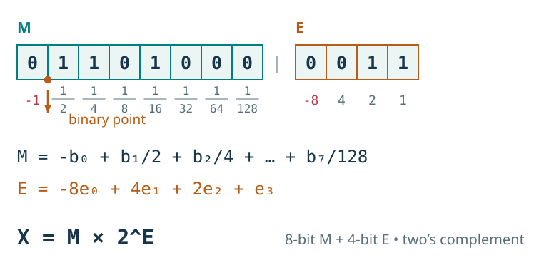
Hàng8 bit M có -1,1/2,…,1/128; hàng4 bit E có -8,4,2,1. Dấu chấm M ngay sau bit đầu; phân biệt hai bit dấu; ghi rõ mô hình Cambridge 8+4.
Tham khảo: Fig.13.7 tr.313; thay cấu hình 8+8 thành 8+4 · Câu luyện: 16-18
U13-V26 · 13.3Giải mã số dương từng bước
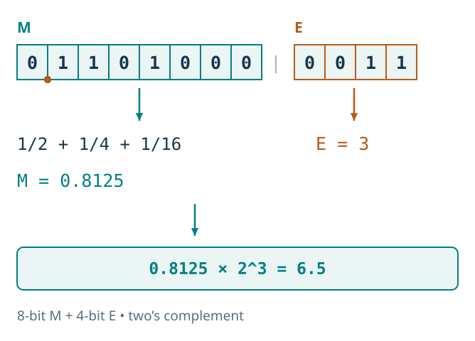
M01101000, E0011; nối các bit1 tới 1/2+1/4+1/16=0.8125; E=3; kết quả6.5. Kèm vị trí dịch binary point.
Tham khảo: Example13.1-13.2 tr.314-315; dùng dữ liệu Guide · Câu luyện: 16
U13-V27 · 13.3Giải mã mantissa âm
M10011000, E0011; tô trọng số -1 và các bit1/8,1/16; M=-0.8125, kết quả-6.5. Cảnh báo bit đầu không phải dấu gắn trước phần trị dương.
Tham khảo: Example13.3 tr.315-316; ví dụ mới · Câu luyện: 17
U13-V28 · 13.3Exponent âm: số nhỏ hơn, dấu không đổi
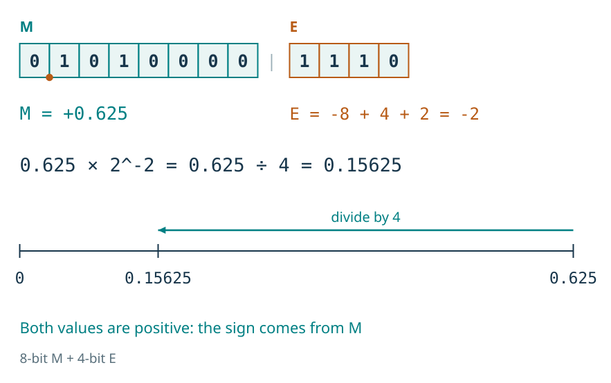
M01010000, E1110; E=-8+4+2=-2; M0.625 chia4 ra0.15625. Trục số phóng to phần dương gần0, không vẽ số mũ âm thành kết quả âm.
Tham khảo: Example13.4 tr.316-317; ví dụ mới dùng M dương · Câu luyện: 18
U13-V29 · 13.3Mã hóa denary dương và âm
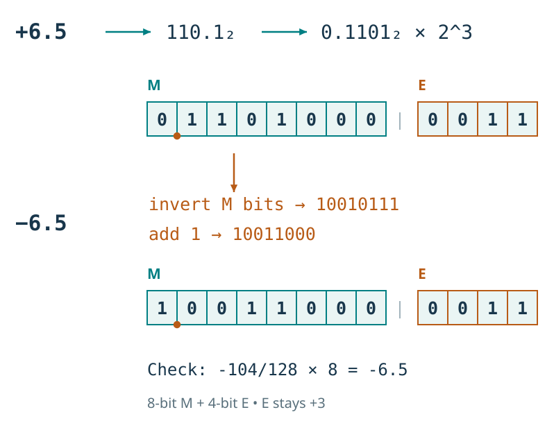
Dòng dương:6.5→110.1₂→0.1101₂×2^3→01101000/0011. Dòng âm: đảo01101000 và cộng1→10011000, giữ E0011. Cuối mỗi dòng kiểm tra ngược.
Tham khảo: Example13.5-13.7 tr.317-320; dữ liệu mới · Câu luyện: 19-20
U13-V30 · 13.3Normalise số dương và bảo toàn giá trị
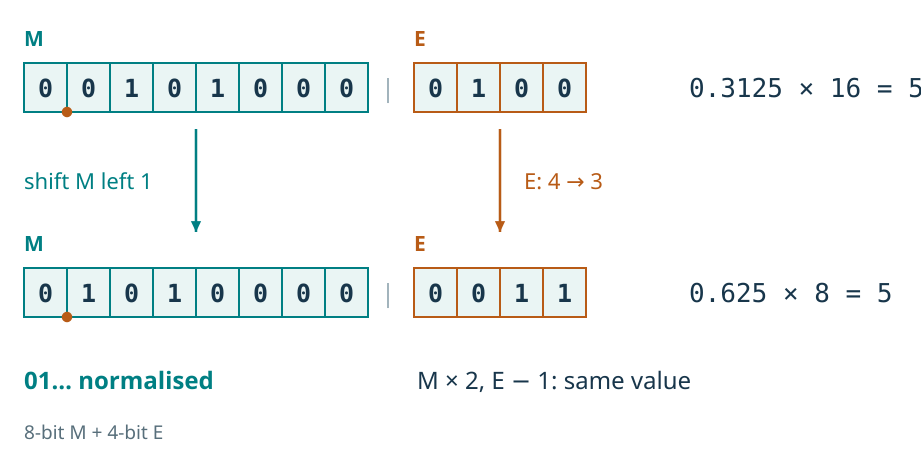
00101000/0100→01010000/0011; M nhân2, E giảm1; cả hai bằng5. Một khung nhỏ nhận diện01 hợp lệ và00 chưa chuẩn hóa.
Tham khảo: Fig.13.8 tr.321, Example13.8 tr.322; dữ liệu mới · Câu luyện: 21
U13-V31 · 13.3Normalise số âm và trường hợp -0.5
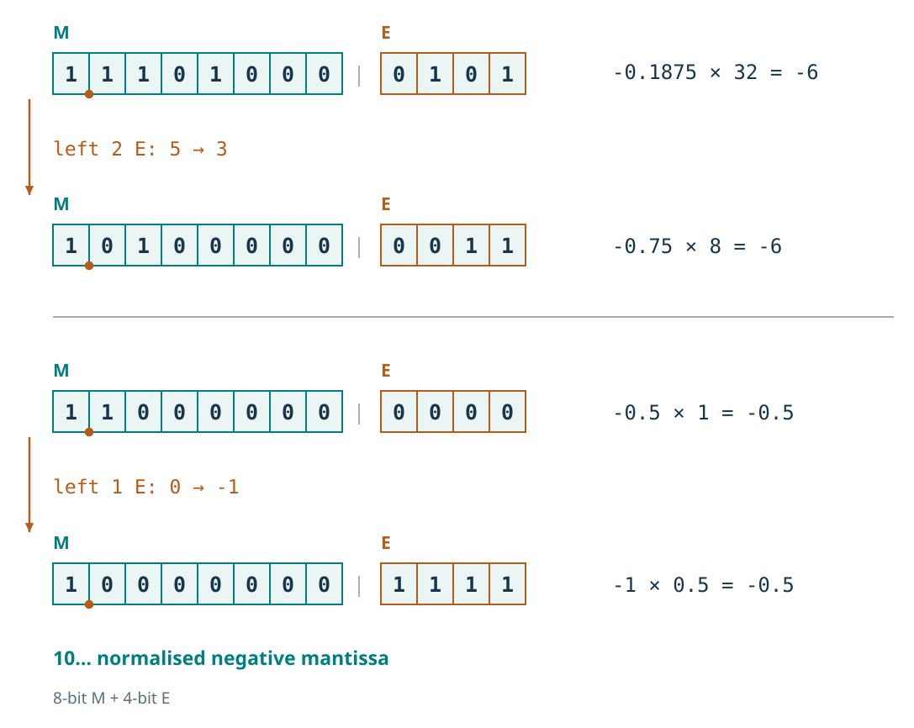
11101000/0101→10100000/0011: dịch2, E5→3, giữ-6. Khung riêng -0.5:11000000/0000→10000000/1111; đầu10 mới chuẩn hóa.
Tham khảo: Example13.9 tr.322 + biên âm bổ sung từ Guide · Câu luyện: 22
U13-V32 · 13.3Precision và range khi chia số bit
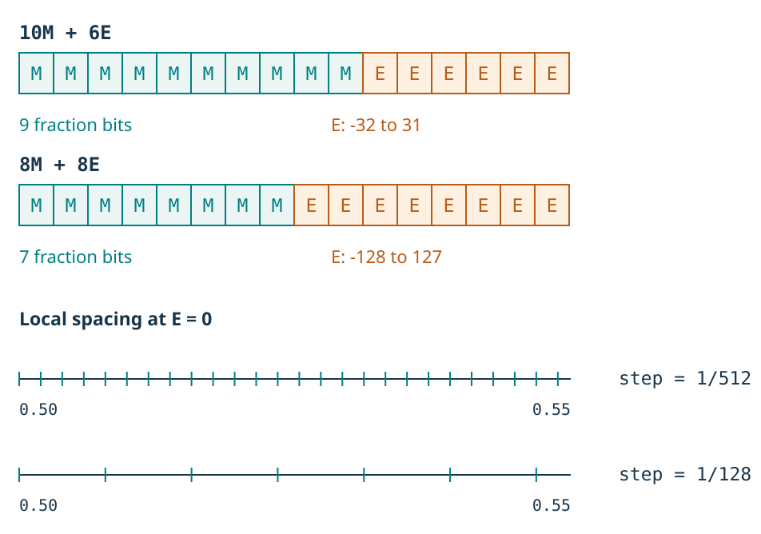
Hai thanh16 bit so10M+6E với8M+8E; thêm zoom khoảng cách giá trị và phạm vi E(-32..31) so(-128..127). Không dùng chỉ một trục chung làm precision biến mất vì scale.
Tham khảo: Fig.13.14-13.16 tr.324; cấu hình theo Guide · Câu luyện: 25
U13-V33 · 13.3Bốn giới hạn của hệ 8+4 đã chuẩn hóa
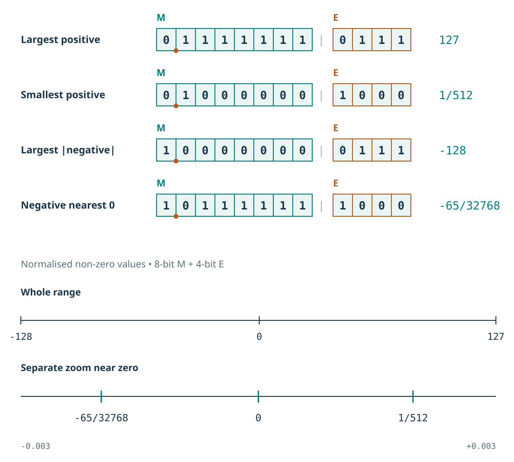
Bốn thẻ bit/giá trị: +127; +1/512; -128; -65/32768. Trục toàn cảnh có khung zoom riêng gần0; nêu âm/dương không đối xứng và chỉ xét số khác0 chuẩn hóa.
Tham khảo: Fig.13.10-13.13 tr.323; đổi hệ8+8 thành8+4 và tính lại · Câu luyện: 23
U13-V34 · 13.3Hai nguyên nhân mất chính xác
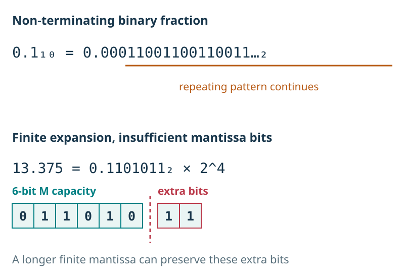
Hai hàng:0.1 có dãy0.000110011… vô hạn;13.375 có dãy hữu hạn nhưng vượt6-bit M. Dùng dấu kéo dài vô hạn ở hàng1 và vùng bit vượt dung lượng ở hàng2.
Tham khảo: tr.320-321, approximation; ví dụ Guide đã kiểm tra · Câu luyện: 27
U13-V35 · 13.3Truncation và rounding-to-nearest
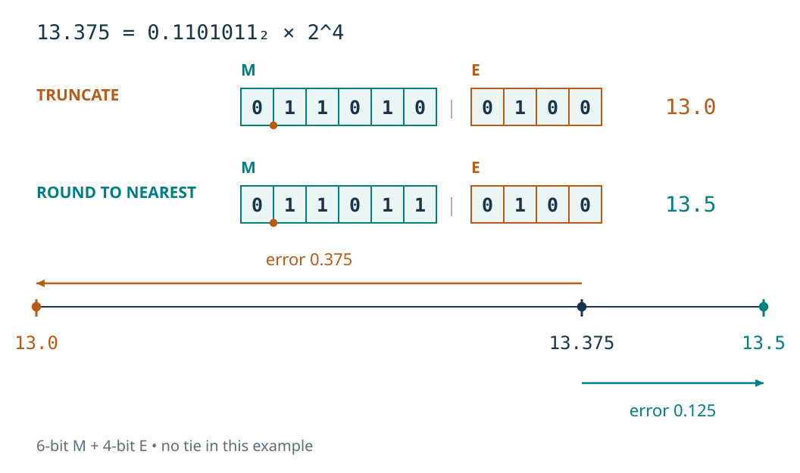
Với6M+4E,13.375→13.0 nếu cắt,→13.5 nếu làm tròn gần nhất. Trục số tuyến tính thể hiện khoảng cách0.375/0.125; hàng bit011010 so011011, E0100.
Tham khảo: tr.320-321; vẽ từ ví dụ tự tính, không dùng kết quả5.88 sai trong sách · Câu luyện: 24
U13-V36 · 13.3Sai số tích lũy qua nhiều lần cộng
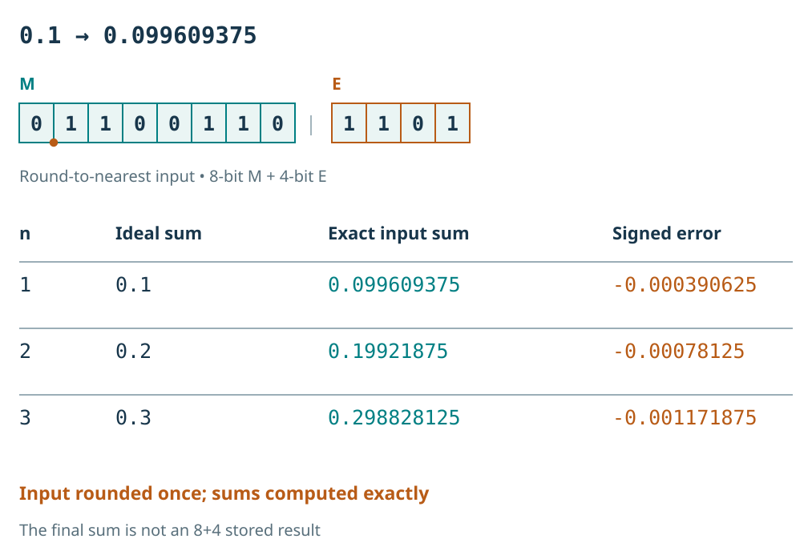
Mô hình chỉ làm tròn đầu vào: nearest của 0.1 trong 8+4 là 0.099609375 (M=01100110, E=1101). Ba tổng chính xác của đầu vào đã xấp xỉ: 0.099609375; 0.19921875; 0.298828125. Không làm tròn tổng về 8+4; ghi rõ sai số có dấu.
Tham khảo: Extension Activity13E tr.324; bổ sung phép tính có giả thiết rõ · Câu luyện: 27, 45; Lab 3
U13-V37 · 13.3Overflow và underflow trên bản đồ range
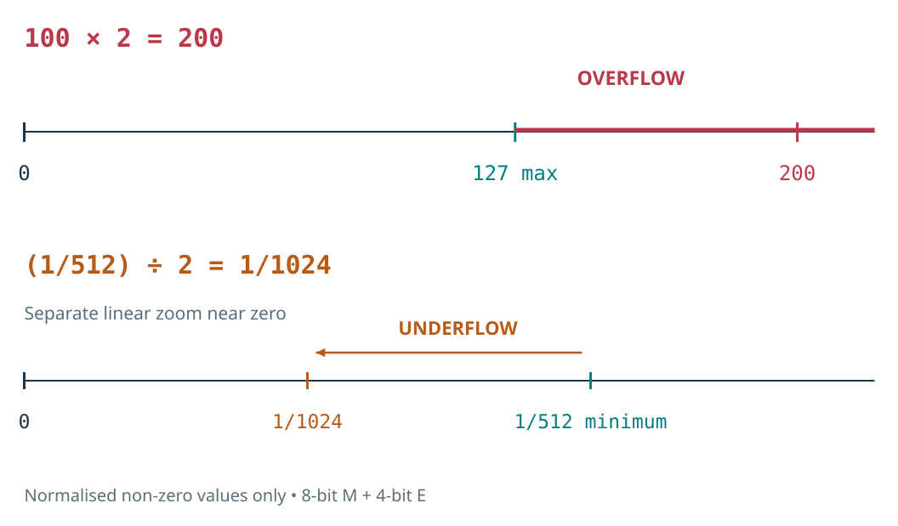
Hai ô:100×2=200 vượt max127; (1/512)/2=1/1024 nằm dưới min dương chuẩn hóa. Gắn với khung zoom gần0; phân biệt underflow với dấu âm.
Tham khảo: tr.325, Floating-point problems; hình mới · Câu luyện: 26
U13-V38 · 13.3Số 0 và giới hạn của quy tắc chuẩn hóa
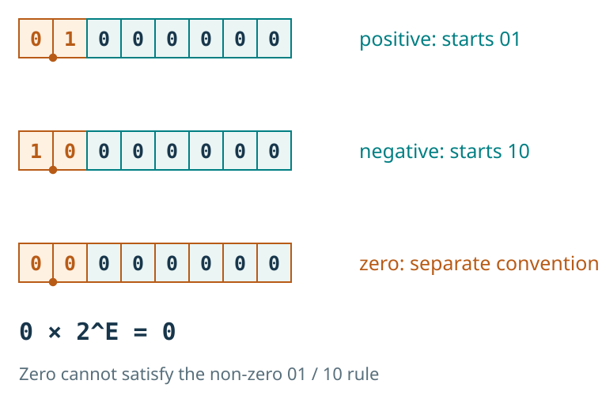
Ba thẻ:01… số dương normalised;10… số âm normalised;00000000 là0 theo quy ước riêng. Gạch bỏ suy luận máy tính không lưu được0; không biểu diễn0.0000000×2^9=2.
Tham khảo: Fig.13.9 tr.322 và giải thích tr.325; thể hiện đúng việc mất bit · Câu luyện: 22, 27
U13-V39 · Ôn tậpBản đồ chọn phương pháp làm bài
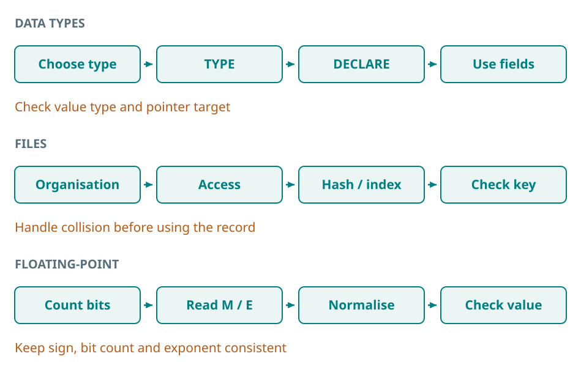
Ba tuyến: chọn kiểu→TYPE/DECLARE/use; chọn organisation/access→hash/key check; floating-point→bit count→M/E→normalise→check value. Gắn lỗi thường gặp tại mỗi nút.
Tham khảo: Bổ sung từ Guide4 và checklist · Câu luyện: 1-27
U13-V40 · Ôn tậpMột hệ thống kết nối cả ba phần
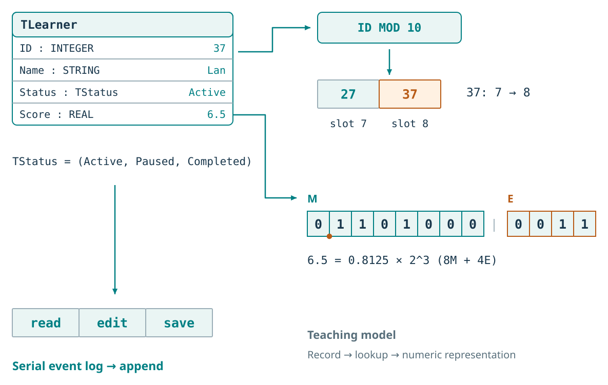
Hồ sơ học viên dùng record/enum→tra cứu ID27/37 qua hash→lưu điểm6.5 bằng8+4; lịch sử thao tác lưu serial. Gắn nhãn phân biệt mô hình bài học với cấu trúc hệ thống thực tế.
Tham khảo: Bổ sung từ Practice28 · Câu luyện: 28